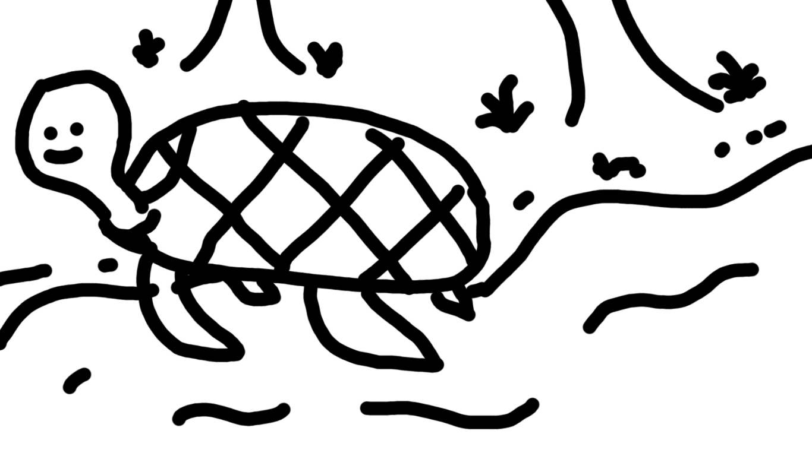
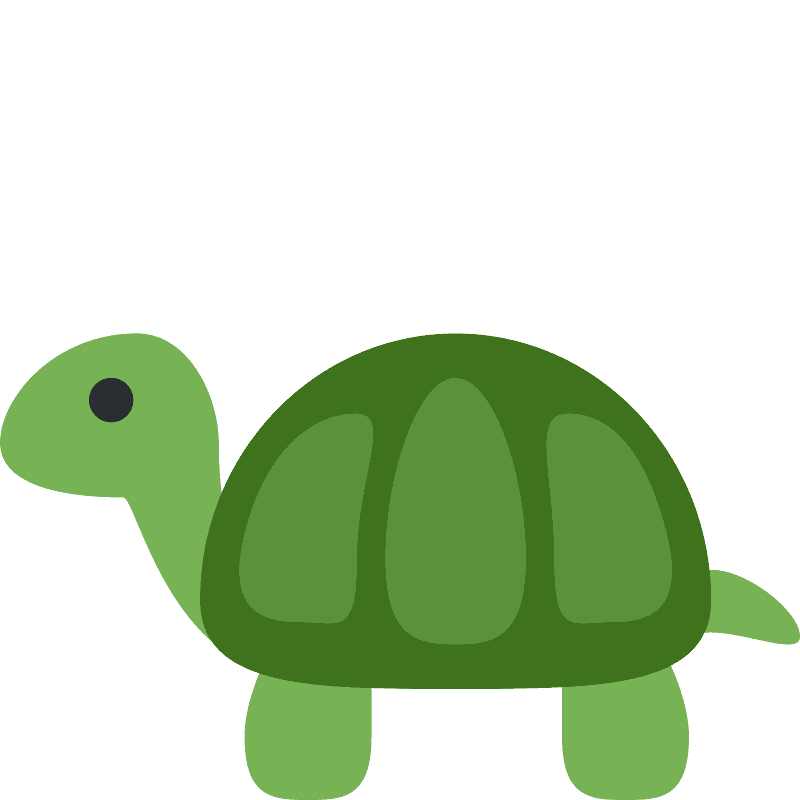

good news! this is my render of a
turtle! it's uncropped! not sized correctly! it looks super long and we love it that way.We also love ms paint 
check this turtle doing a somersault in the middle of the ocean!

good news! this is my render of a
turtle! it's uncropped! not sized correctly! it looks super long and we love it that way.check this turtle doing a somersault in the middle of the ocean!
Name |
Adorableness |
Homeland |
|
|---|---|---|---|
| Vivi | 7/10 | United States of America | |
| Lili | 8/10 | Canada |  |
| Kiki | 9/10 | Mexico | |
| Mimi | 10/10 | Insert fourth North American country here |
Bunnies are the cutest animals on the planet. They are the best
friends with turtles.
WOW! Although turtles are encountered at least 3 times in an individual's life, bunnies are encountered at least 150 times in an individual's life. The most popular breed of bunnies are the holland lop. These bunnies are well known for their cute
faces,
fluffy fur, and sagging ears.

FOLLOW THESE STEPS!!
What a funny image!
Turtles are slow too, but bunnies jump everywhere which is scientifically proven faster than turtles.
research has shown bunnies are like the best pets to have. This is because they groom themselves!
DON'T BELIEVE THIS CREDIBLE SOURCE
check out this credible source.
More cool bunnies
Bunnies eat plenty of things, from carrots and parsley to

Turtles don't each much. They are pretty cool animals too! But really can they jump?
The coolest turtle is this guy. scientifically proven

Hawksbill Turtle
Hawksbills are named for their narrow, pointed beak. They also have a distinctive pattern of overlapping scales on their shells that form a serrated-look on the edges. Hawksbills are found mainly throughout the world's tropical oceans, predominantly in coral reefs. They feed mainly on sponges by using their narrow pointed beaks to extract them from crevices on the reef, but also eat sea anemones and jellyfish. Sea turtles are the living representatives of a group of reptiles that has existed on Earth and travelled our seas for the last 100 million years. They are a fundamental link in marine ecosystems and help maintain the health of coral reefs and sea grass beds.
Loggerhead TurtleLoggerhead turtles are named for their large heads that support powerful jaw muscles, allowing them to crush hard-shelled prey like clams and sea urchins. They are less likely to be hunted for their meat or shell compared to other sea turtles. Bycatch, the accidental capture of marine animals in fishing gear, is a serious problem for loggerhead turtles because they frequently come in contact with fisheries. Loggerheads are the most common turtle in the Mediterranean, nesting on beaches from Greece and Turkey to Israel and Libya. Many of their nesting beaches are under threat from tourism development. Sea turtles are the living representatives of a group of reptiles that has existed on Earth and travelled our seas for the last 100 million years.
Leatherback TurtleLeatherback turtles are named for their shell, which is leather-like rather than hard, like other turtles.They are the largest sea turtle species and also one of the most migratory, crossing both the Atlantic and Pacific Oceans. Pacific leatherbacks migrate from nesting beaches in the Coral Triangle all the way to the California coast to feed on the abundant jellyfish every summer and fall. Although their distribution is wide, numbers of leatherback turtles have seriously declined during the last century as a result of intense egg collection and fisheries bycatch. Globally, leatherback status according to IUCN is listed as Vulnerable, but many subpopulations (such as in the Pacific and Southwest Atlantic) are Critically Endangered.
Green TurtleThe green turtle is one of the largest sea turtles and the only herbivore among the different species. Green turtles are in fact named for the greenish color of their cartilage and fat, not their shells. In the Eastern Pacific, a group of green turtles that have darker shells are called black turtles by the local community. Green turtles are found mainly in tropical and subtropical waters. Like other sea turtles, they migrate long distances between feeding grounds and the beaches from where they hatched. Classified as endangered, green turtles are threatened by overharvesting of their eggs, hunting of adults, being caught in fishing gear and loss of nesting beach sites.
Olive Ridley TurtleThe name for this sea turtle is tied to the color of its shell—an olive green hue. They are currently the most abundant of all sea turtles. Their vulnerable status comes from the fact that they nest in a very small number of places, and therefore any disturbance to even one nest beach could have huge repercussions on the entire population.